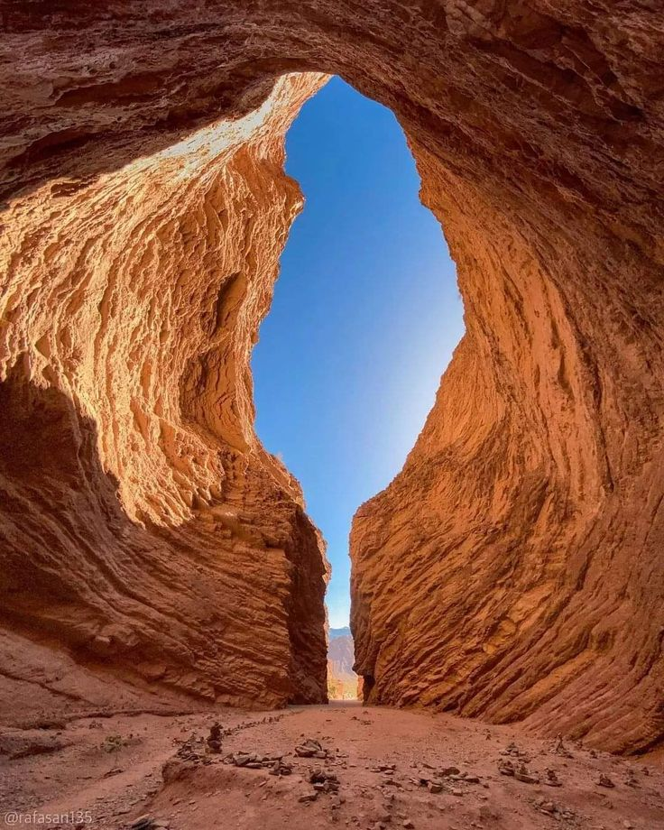
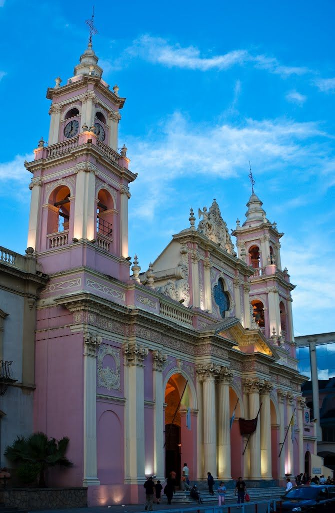
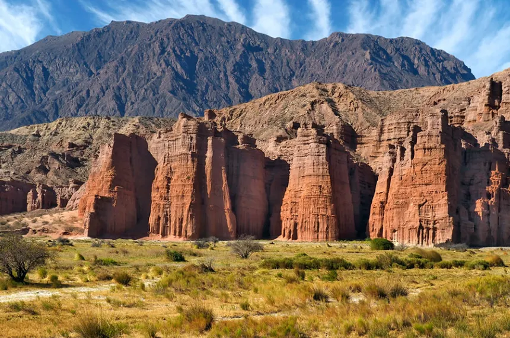
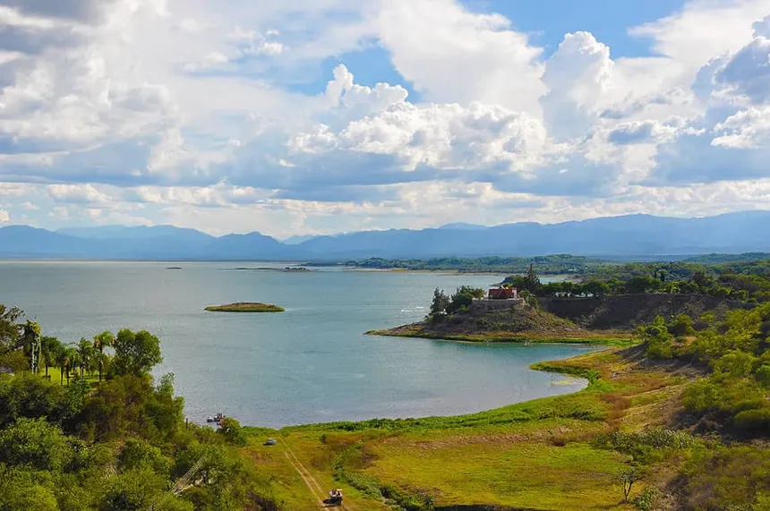
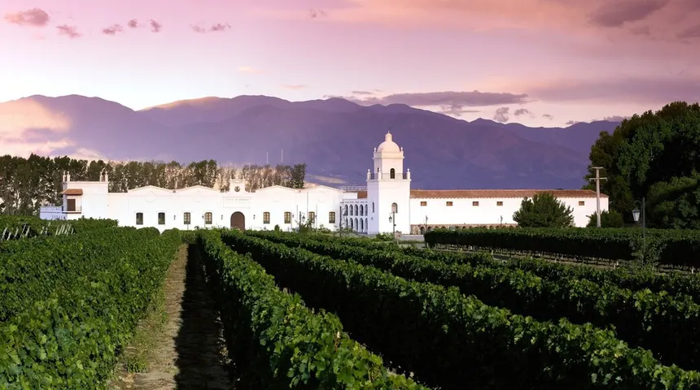
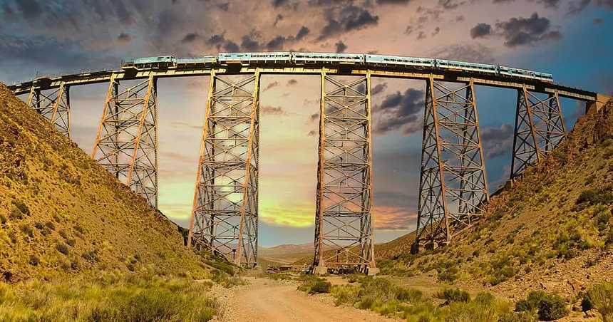

Salta es uno de los destinos turísticos más atractivos del norte argentino, reconocida
por su combinación única de historia, cultura y paisajes imponentes. Conocida como “La Linda” , esta
provincia cautiva a quienes la visitan por su arquitectura colonial bien conservada, su gastronomía
regional y la calidez de su gente. Desde la ciudad capital, con sus iglesias, museos y plazas, hasta los
Valles Calchaquíes, el Tren a las Nubes y la Quebrada de las Conchas , Salta
ofrece una experiencia completa que mezcla tradición, naturaleza y aventura en cada rincón.
Su cultura refleja una fuerte herencia colonial y andina, visible en su arquitectura, sus
celebraciones y su forma de vivir. Las calles del centro histórico, las iglesias antiguas
y los museos cuentan la historia de una región que ha sabido preservar su esencia a lo largo del tiempo.
Las tradiciones también forman parte esencial de la experiencia salteña. Durante el año se celebran numerosas festividades donde la música folclórica, las danzas y la vestimenta típica cobran protagonismo:
Peñas folclóricas con música en vivo
Festivales culturales y celebraciones religiosas
Procesiones y eventos tradicionales
Artesanías locales hechas a mano
Además, Salta ofrece una gran variedad de lugares para visitar, ideales
tanto para quienes buscan aventura como para quienes prefieren un recorrido más tranquilo:
Galeria
Ciudad de Salta
Historia colonial, cultura viva y arquitectura encantadora.
MAAM
Museo con dos momias incas preservadas.

Anfiteatro
Formación natural con acústica única en la quebrada.

Catedral
Imponente templo histórico frente a la plaza principal.

Quebrada de las Conchas
Paisaje erosionado con formas rocosas sorprendentes.

Dique Cabra Corral
Lago ideal para deportes y aventura.

Cafayate
Vinos, paisajes rojizos y turismo relajado.

Tren a las Nubes
Experiencia única en altura extrema.
Salinas Grandes
Desierto blanco infinito y paisajes surrealistas.
Promocional
Salta es, en definitiva, un destino que invita a descubrir, disfrutar y
conectar con la esencia del norte argentino. Cada rincón tiene una historia, cada plato un sabor único
y cada paisaje una postal inolvidable. Ideal para quienes buscan algo más que un viaje: una
experiencia cultural completa.